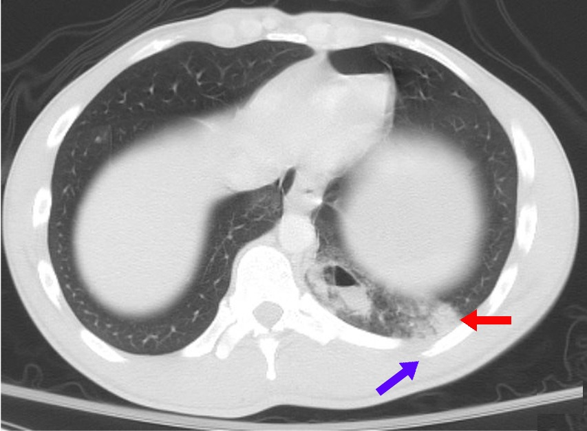

Ficha del catálogo
Contusión pulmonar y trauma torácico
- Sistema
- Respiratorio
- Modalidad
- TC
- Región
- Tórax
- Dificultad
- Intermedio
La contusión pulmonar es la lesión parenquimatosa más frecuente del traumatismo torácico cerrado y consiste en hemorragia y edema alveolar sin desgarro significativo. Suele acompañarse de fracturas costales, neumotórax y hemotórax. Aparece en las primeras horas y mejora en pocos días, a diferencia de la neumonía por aspiración que la sigue.
Técnica
Tomografía de tórax con contraste dentro del protocolo de politraumatismo, con reconstrucciones en ventana pulmonar, mediastínica y ósea.
Qué observar
- Consolidaciones no segmentarias adyacentes a la zona de impacto
- Respeto de una banda subpleural de un milímetro o dos en muchos casos
- Fracturas costales, escapulares o esternales acompañantes
- Neumotórax, hemotórax o neumomediastino asociados
- Laceraciones pulmonares con cavidades de aire o sangre en su interior
- Evolución rápida hacia la resolución en las series de control
Hallazgos
Áreas de consolidación y vidrio deslustrado de límites imprecisos y distribución no segmentaria en el territorio del impacto, con lesiones óseas y pleurales asociadas.
Perlas
El tiempo de evolución diferencia contusión de infección: La contusión aparece de inmediato y mejora en dos o tres días, mientras que un infiltrado que aparece o empeora después del segundo día sugiere neumonía o aspiración.
Diagnóstico diferencial
- Neumonía por aspiración
- Aparece tras el ingreso y afecta segmentos dependientes con fiebre.
- Atelectasia postraumática
- Pérdida de volumen con desplazamiento de cisuras.
- Edema pulmonar por sobrecarga
- Distribución central y simétrica con derrame.
Simuladores
- Aspiración de contenido gástrico previa al trauma
- Consolidación infecciosa preexistente
- Artefacto por decúbito prolongado
Por modalidad
- RX
- Detección inicial rápida, pero subestima la extensión
- TC
- Define la extensión y las lesiones asociadas del politraumatismo
Protocolo
Tomografía toracoabdominal con contraste en el protocolo de trauma, con adquisición volumétrica y reconstrucciones óseas y pulmonares.
Clasificación
Errores frecuentes
- Confundir contusión con neumonía en las primeras horas
- No revisar la ventana ósea y omitir fracturas costales o escapulares
- Pasar por alto un neumotórax anterior en el paciente en decúbito

contusion pulmonar trauma torax hemotorax fracturas costales laceracion politraumatismo